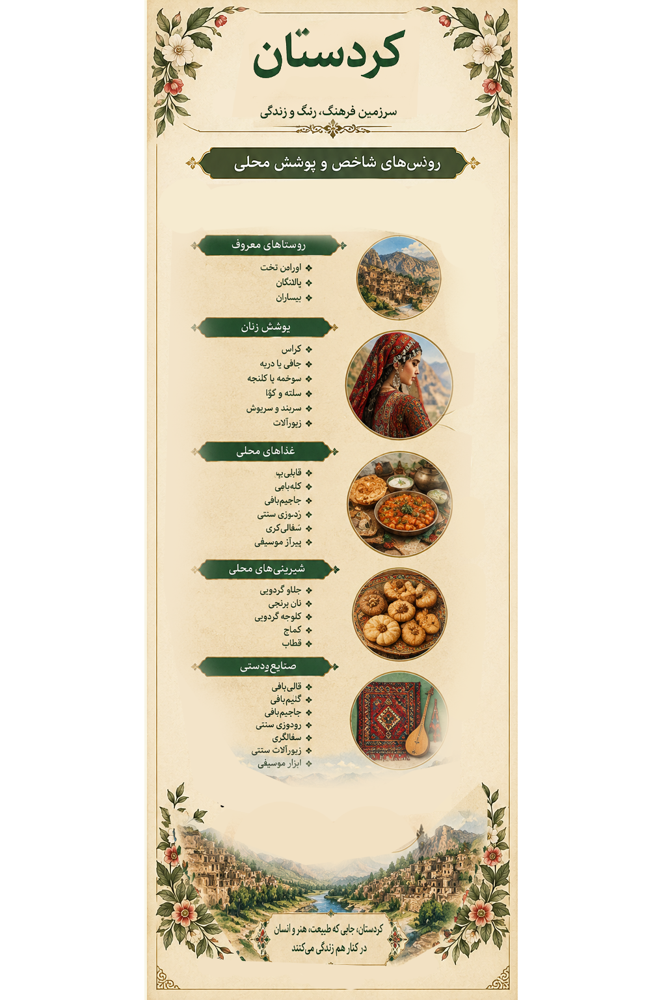

۱. تصویر کردستان؛ روایت یک سرزمین 1. Kurdistan in Art: A Land's Story
در این اثر، پوشش رنگارنگ زنان کرد در کنار نقشمایههای قالی و گلیم، ساز دف، خوراکهای محلی و چشمانداز روستاهای کوهستانی قرار گرفته است. لایههای کاغذ پاره، گلهای رنگین و بافتهای سنتی، پیوند هنر، طبیعت و زندگی روزمره را روایت میکنند. This artwork brings together colorful Kurdish women's dress, carpet and kilim patterns, the daf drum, local foods and mountain-village landscapes. Torn-paper layers, vivid flowers and traditional textures express the connection between art, nature and everyday life.

اثر هنری کردستان از مجموعه «ایران، هزار رنگ» The Kurdistan artwork from “Iran, A Thousand Colors”
این تصویر، اثر هنری مجموعه است؛ توضیحات این صفحه برای آشنایی بیشتر با فرهنگ و میراث کردستان ارائه شدهاند. This image is the artwork created for the collection. The text on this page provides additional cultural and historical context about Kurdistan.
۲. پوشش زنان کردستان؛ رنگ، وقار و اصالت 2. Women's Dress in Kurdistan: Color and Heritage
پوشش زنان کرد در همه مناطق یکسان نیست. نوع پارچه، رنگ، تزئینات، سربند و شیوه بستن پوشش میتواند با توجه به ناحیه، خانواده، نسل و مناسبت تفاوت داشته باشد. لباسهای محلی، افزون بر زیبایی، بخشی از حافظه فرهنگی و مهارتهای دوخت و تزئین هستند. Kurdish women's clothing is not identical across all areas. Fabrics, colors, decorations, head coverings and the way garments are worn may vary by region, family, generation and occasion. Traditional dress is both an expression of beauty and part of cultural memory and textile skills.

لیبل اختصاصی کردستان؛ راهنمای تصویری پوشش و فرهنگ منطقه Kurdistan exhibition label: a visual guide to regional dress and culture
اجزای شناختهشده پوشاک کردی Recognizable Elements of Kurdish Dress
کراسKras
پیراهن یا لباس اصلی که در نمونههای محلی میتواند بلند، رنگارنگ و دارای آستینهای آزاد باشد. A principal dress or gown that may be long, colorful and have loose sleeves in some regional styles.
جافی یا دِرپهJafi or Derpe
نامهایی برای گونههایی از شلوارهای محلی که شکل و کاربرد آنها ممکن است میان نواحی متفاوت باشد. Names associated with regional forms of traditional trousers; their cut and use may vary by area.
سوخمه و کُلَنجهSokhmeh and Kolanja
نامهایی برای پوششهای رویی یا جلیقهمانند در برخی سنتهای محلی؛ شکل دقیق آنها نیازمند بررسی نمونههای منطقهای است. Names for outer garments or vest-like pieces in some local traditions; their precise forms require regional documentation.
سَلته و کَواSalteh and Kawa
از نامهایی که در معرفی برخی پوششهای محلی به کار میروند؛ کاربرد و شکل آنها باید با توجه به منبع محلی بررسی شود. Terms used in descriptions of some traditional garments; their form and use should be checked against local sources.
سربند و روسریHeadscarves and Headwraps
رنگ، نقش پارچه و شیوه بستن سربند از جلوههای قابل توجه پوشش زنان در برخی مناطق کردنشین است. Fabric colors, patterns and wrapping techniques are notable features of women's dress in some Kurdish regions.
زیورآلاتJewelry
زیورهای فلزی، گردنبندها و تزئینات لباس میتوانند در پوششهای مناسبتی و محلی دیده شوند. Metal ornaments, necklaces and garment decorations may feature in regional and ceremonial dress.
پوشش زنان روستایی Rural Women's Clothing
در بررسی پوشش زنان روستایی کردستان، باید به تنوع میان نواحی اورامان، اطراف مریوان، سروآباد، سنندج و دیگر مناطق توجه کرد. لباس روزمره، پوشش کار، لباس جشن و پوشاک نسلهای مختلف ممکن است تفاوت داشته باشند. برای نسبتدادن یک لباس مشخص به روستایی معین، عکس مستند، روایت مردم محلی یا پژوهش مردمشناسی لازم است. Research into rural women's clothing in Kurdistan should recognize differences among Hawraman, the areas around Marivan, Sarvabad, Sanandaj and other localities. Everyday, working and ceremonial clothing may differ, as can garments across generations. Assigning a specific outfit to a particular village requires documented photographs, local testimony or ethnographic research.
۳. روستاها و نواحی؛ زندگی در دل زاگرس
3. Villages and Regions: Life in the Zagros
روستاها و نواحی کردستان با معماری سنگی، مسیرهای کوهستانی، رودخانهها، باغها و شیوههای زندگی محلی شناخته میشوند. هر منطقه روایت ویژهای دارد و شناخت دقیق پوشش زنان آن به ثبت و مستندسازی جداگانه نیازمند است.
Kurdistan's villages and regions are known for stone architecture, mountain paths, rivers, orchards and local ways of life. Each area has its own story, and documenting women's clothing requires focused local research.
اورامان تختHawraman Takht
روستایی کوهستانی با معماری پلکانی و پیوند عمیق با فرهنگ اورامی و چشمانداز زاگرس.
A mountain village known for stepped architecture, Hawrami culture and its Zagros landscape.
پالنگانPalangan
روستایی پلکانی در دل دره که خانههای سنگی و رودخانه از ویژگیهای چشمانداز آن هستند.
A stepped village in a valley, known for its stone houses and river landscape.
بیسارانBesarān
از روستاهای کوهستانی منطقهٔ سروآباد که میتوان آن را در بررسی معماری، طبیعت و فرهنگ روستایی کردستان دنبال کرد.
A mountain village in the Sarvabad area worth exploring for its rural landscape, architecture and culture.
نواحی مریوانMarivan Area
منطقهای با چشماندازهای طبیعی، دریاچهٔ زریوار و روستاهایی که هرکدام ویژگیهای محلی خود را دارند.
An area of natural landscapes, Zarivar Lake and villages with their own local characteristics.
اطراف سنندجSanandaj Surroundings
روستاهای پیرامون سنندج برای مطالعهٔ پیوند زندگی روستایی، هنرهای دستی و فرهنگ منطقه اهمیت دارند.
Villages around Sanandaj offer opportunities to explore rural life, handicrafts and regional culture.
سروآباد و اورامانSarvabad and Hawraman
ناحیهای کوهستانی با روستاهای تاریخی و میراث فرهنگی متنوع که برای پژوهش میدانی و ثبت پوشاک محلی اهمیت دارد.
A mountainous area with historic villages and diverse cultural heritage, valuable for field research and documenting local dress.
بانهBaneh
شهرستانی در شمالغرب کردستان با فرهنگ کُردی، طبیعت کوهستانی و سنتهای محلی. پوشش زنان این ناحیه نیز میتواند بخشی از روایت تنوع لباسهای محلی کردستان باشد.
A county in northwestern Kurdistan with Kurdish culture, mountain landscapes and local traditions. Women's dress in this area adds another perspective to the diversity of traditional Kurdish clothing.
توجه: بانه شهرستان است، نه روستا. این فهرست نواحی و روستاها را معرفی میکند و ادعا نمیکند که هر روستا لباس اختصاصی و ثابتی دارد.
Note: Baneh is a county, not a village. This list introduces regions and villages without claiming that each village has one exclusive, unchanging outfit.
کوهستان زاگرسThe Zagros Mountains
کوهستان، درهها و رودخانهها بخشی از محیط طبیعی زندگی و شکلگیری فرهنگهای گوناگون منطقه هستند.
Mountains, valleys and rivers form part of the natural setting in which the region's diverse cultures have developed.
۳. روستاها و نواحی؛ زندگی در دل زاگرس 3. Villages and Regions: Life in the Zagros
روستاها و نواحی کردستان با معماری سنگی، مسیرهای کوهستانی، رودخانهها، باغها و شیوههای زندگی محلی شناخته میشوند. هر منطقه روایت ویژهای دارد و شناخت دقیق پوشش زنان آن به ثبت و مستندسازی جداگانه نیازمند است. Kurdistan's villages and regions are known for stone architecture, mountain paths, rivers, orchards and local ways of life. Each area has its own story, and documenting women's clothing requires focused local research.
اورامان تختHawraman Takht
روستایی کوهستانی با معماری پلکانی و پیوند عمیق با فرهنگ اورامی و چشمانداز زاگرس. A mountain village known for stepped architecture, Hawrami culture and its Zagros landscape.
پالنگانPalangan
روستایی پلکانی در دل دره که خانههای سنگی و رودخانه از ویژگیهای چشمانداز آن هستند. A stepped village in a valley, known for its stone houses and river landscape.
بیسارانBesarān
از روستاهای کوهستانی منطقهٔ سروآباد که میتوان آن را در بررسی معماری، طبیعت و فرهنگ روستایی کردستان دنبال کرد. A mountain village in the Sarvabad area worth exploring for its rural landscape, architecture and culture.
نواحی مریوانMarivan Area
منطقهای با چشماندازهای طبیعی، دریاچهٔ زریوار و روستاهایی که هرکدام ویژگیهای محلی خود را دارند. An area of natural landscapes, Zarivar Lake and villages with their own local characteristics.
اطراف سنندجSanandaj Surroundings
روستاهای پیرامون سنندج برای مطالعهٔ پیوند زندگی روستایی، هنرهای دستی و فرهنگ منطقه اهمیت دارند. Villages around Sanandaj offer opportunities to explore rural life, handicrafts and regional culture.
سروآباد و اورامانSarvabad and Hawraman
ناحیهای کوهستانی با روستاهای تاریخی و میراث فرهنگی متنوع که برای پژوهش میدانی و ثبت پوشاک محلی اهمیت دارد. A mountainous area with historic villages and diverse cultural heritage, valuable for field research and documenting local dress.
بانهBaneh
شهرستانی در شمالغرب کردستان با فرهنگ کُردی، طبیعت کوهستانی و سنتهای محلی. پوشش زنان این ناحیه نیز میتواند بخشی از روایت تنوع لباسهای محلی کردستان باشد. A county in northwestern Kurdistan with Kurdish culture, mountain landscapes and local traditions. Women's dress in this area adds another perspective to the diversity of traditional Kurdish clothing.
توجه: بانه شهرستان است، نه روستا. این فهرست نواحی و روستاها را معرفی میکند و ادعا نمیکند که هر روستا لباس اختصاصی و ثابتی دارد. Note: Baneh is a county, not a village. This list introduces regions and villages without claiming that each village has one exclusive, unchanging outfit.
کوهستان زاگرسThe Zagros Mountains
کوهستان، درهها و رودخانهها بخشی از محیط طبیعی زندگی و شکلگیری فرهنگهای گوناگون منطقه هستند. Mountains, valleys and rivers form part of the natural setting in which the region's diverse cultures have developed.
۵. طعمهای اصیل کردستان 5. Traditional Flavors of Kurdistan
خوراکهای کردی با محصولات فصلی، سبزیهای محلی، نان، لبنیات و سنت مهماننوازی پیوند دارند. دستورها و نام غذاها ممکن است میان شهرها و خانوادهها تفاوت داشته باشند. Kurdish cuisine draws on seasonal produce, local herbs, bread, dairy and traditions of hospitality. Recipes and dish names may vary between towns and families.
کلانهKalaneh
نان محلی که در برخی شیوههای تهیه با گیاهان خوراکی فصلی مانند پیچک یا گیاهان مشابه پر میشود. A local flatbread that may be filled with seasonal edible greens, depending on the recipe.
شِلکینهSholkineh
نوعی نان یا خوراک خمیری محلی که شیوه تهیه آن در مناطق مختلف میتواند تفاوت داشته باشد. A traditional bread or batter-based local food whose preparation may vary by area.
ترخینهTarkhineh
خوراکی سنتی بر پایه غلات و فرآوردههای تخمیری که در برخی مناطق برای تهیه آش و سوپ استفاده میشود. A traditional fermented grain preparation used to make soups in some regions.
آشهای محلیRegional Soups
آشها و غذاهای آبکی با حبوبات، سبزیها و مواد فصلی که دستورهای خانوادگی گوناگونی دارند. Soups made with legumes, herbs and seasonal ingredients, with many family variations.
نان ساجیSaji Bread
نان نازکی که روی صفحه یا ساج داغ پخته میشود و در سنتهای غذایی منطقه دیده میشود. A thin bread cooked on a hot saj or griddle, found in regional food traditions.
دلمه و کوفتهDolma and Kofta
از خانواده غذاهایی که در شکلها و دستورهای متفاوت در بخشهای گوناگون منطقه تهیه میشوند. Dishes prepared in different forms and recipes across various parts of the region.
شیرینیها و خوراکیهای شیرین Sweets and Sweet Treats
کِلِیچهKlicheh
نامی برای گونههایی از شیرینی یا نان شیرین محلی؛ شکل و مواد اولیه به دستور منطقه بستگی دارد. A name used for some local sweet pastries or breads; shape and ingredients depend on the regional recipe.
شیرینیهای خانگیHomemade Sweets
شیرینیهای محلی که در خانوادهها و مناسبتهای مختلف تهیه میشوند؛ برای معرفی نامهای اختصاصی هر شهر باید منبع محلی بررسی شود. Local sweets prepared in homes and for special occasions; specific town specialties should be verified through local sources.
محصولات فصلیSeasonal Treats
خشکبار، میوههای فصلی و فرآوردههای محلی نیز ممکن است در پذیرایی و سوغات منطقه حضور داشته باشند. Dried fruits, seasonal produce and local preparations may also feature in regional hospitality and souvenirs.
برای نسخه نهایی نمایشگاه، نام و دستور شیرینیهای اختصاصی هر شهر باید با منبع معتبر محلی تطبیق داده شود. For the final exhibition, the names and recipes of town-specific sweets should be checked against reliable local sources.
۶. محصولات محلی کردستان 6. Local Products of Kurdistan
عسل کوهستانMountain Honey
عسل تولیدشده در نواحی کوهستانی، با ویژگیهایی که به پوشش گیاهی و شرایط هر منطقه وابسته است. Honey from mountain areas, with characteristics influenced by local vegetation and conditions.
گردو و خشکبارWalnuts and Dried Fruits
محصولات باغی و خشکبار از اقلامی هستند که بسته به ناحیه و فصل در بازارهای محلی عرضه میشوند. Orchard products and dried fruits are sold in local markets depending on area and season.
لبنیات محلیLocal Dairy
فرآوردههای لبنی بخشی از شیوههای غذایی و دامداری در برخی نواحی روستایی و کوهستانی هستند. Dairy products are part of food and herding traditions in some rural and mountain areas.
گیاهان خوراکی فصلیSeasonal Edible Greens
برخی گیاهان خودرو در فصل مناسب برای خوراکهای محلی استفاده میشوند؛ شناسایی و مصرف آنها باید با دانش محلی معتبر انجام شود. Some wild greens are used in seasonal dishes; identification and use should rely on reliable local knowledge.
۷. صنایعدستی کردستان؛ هنر دست و حافظه فرهنگ 7. Kurdistan Handicrafts: Craft and Cultural Memory
صنایعدستی کردستان، از بافتههای سنتی تا کارهای چوبی، سفال، رودوزی و سازسازی، بخشی از دانش و مهارت هنرمندان منطقهاند. فهرست زیر برای آشنایی با زمینههای صنایعدستی است؛ میزان رواج و محل تولید هر مورد ممکن است در نواحی مختلف تفاوت داشته باشد. Kurdistan's handicrafts range from traditional textiles to woodwork, pottery, embroidery and instrument-making. The list below introduces these craft traditions; their prevalence and production locations may vary by area.
۱. انواع صنایعدستی کردستان1. Kurdistan Handicrafts
مجموعهای از هنرهای بافندگی، دوخت، چوب، سفال، فلز و ساخت ابزارهای سنتی که در زندگی و فرهنگ منطقه جای دارند. A range of weaving, sewing, wood, pottery, metal and traditional tool-making crafts connected with regional life and culture.
۲. قالی کردستان2. Kurdish Carpets
قالیهای دستباف با نقشها و رنگهای متنوع که طرح آنها میتواند از سنتهای محلی و سلیقه بافندگان تأثیر بگیرد. Handwoven carpets with varied patterns and colors influenced by local traditions and weavers' choices.
۳. گلیمبافی3. Kilim Weaving
بافت تخت و بدون پرز که با ترکیب رنگها و نقشهای هندسی و محلی شناخته میشود. Flat, pileless weaving known for its color combinations and geometric or regional patterns.
۴. ارغوانبافی4. Arghavan Twig Weaving
بافت محصولات کاربردی و تزئینی با شاخههای انعطافپذیر؛ مواد و شیوه ساخت به سنت و دسترسی محلی بستگی دارد. Making practical and decorative woven objects from flexible branches, depending on local materials and techniques.
۵. جاجیمبافی5. Jajim Weaving
بافت پارچهای سنتی با نوارها و ترکیب رنگی مشخص که برای زیرانداز و دیگر کاربردهای خانگی استفاده میشود. Traditional striped textile weaving used for floor coverings and other household purposes.
۶. موجبافی6. Moj Weaving
بافت سنتی پارچههای ضخیم و کاربردی که در برخی مناطق برای روانداز و وسایل خانگی به کار میرود. A traditional technique for sturdy textiles used in some areas for coverings and household items.
۷. شالبافی7. Shawl Weaving
بافت شال و پارچههای پوشیدنی با الیاف و نقشهای گوناگون، متناسب با سنت هر منطقه. Weaving shawls and wearable textiles in varied fibers and patterns according to regional traditions.
۸. جولاییبافی8. Julayi Weaving
نام یکی از زمینههای بافندگی سنتی در فهرست صنایعدستی منطقه؛ جزئیات شیوه و محصولات آن نیازمند بررسی منبع تخصصی است. A traditional weaving category listed among regional crafts; its precise techniques and products require specialist documentation.
۹. رودوزی سنتی9. Traditional Embroidery
تزئین پارچه با نخ و دوختهای نقشدار که میتواند در لباس، لوازم پارچهای و تزئینات محلی دیده شود. Decorating fabric with patterned stitching for garments, textiles and local decorative items.
۱۰. نمدمالی10. Felt Making
ساخت نمد با فشردن و درهمنشاندن الیاف پشم و استفاده از رطوبت و فشار. Making felt by matting wool fibers together through moisture and pressure.
۱۱. گیوه و کلاش11. Giveh and Klash Footwear
گونههایی از کفشهای سنتی دستساز که در ساخت آنها از مواد و مهارتهای بومی استفاده میشود؛ کلاش با فرهنگ مناطق کردنشین پیوند دارد. Traditional handmade footwear made with local materials and skills; klash is closely associated with Kurdish regions.
۱۲. کردیدوزی12. Kurdish Dressmaking
دوخت و تزئین پوشاک محلی با برشها، نوارها و جزئیات متناسب با سبکهای منطقهای. Making and decorating traditional garments with cuts, trims and details shaped by regional styles.
۱۳. نازککاری سنندج13. Sanandaj Wood Inlay
هنر ظریف کار با چوب و کنار هم نشاندن قطعات و نقشهای کوچک برای ساخت اشیای تزئینی و کاربردی. Fine woodwork involving small pieces and patterns to create decorative and practical objects.
۱۴. سفالگری سنتی14. Traditional Pottery
ساخت ظروف و اشیای سفالی با شکلها و روشهای مختلف؛ شیوه تزئین و تولید در هر کارگاه میتواند متفاوت باشد. Making pottery vessels and objects in varied forms and techniques, with decoration differing between workshops.
۱۵. زیورآلات سنتی15. Traditional Jewelry
ساخت و تزئین زیورهایی که در برخی پوششهای محلی و مناسبتها استفاده میشوند؛ مواد و طرحها متنوعاند. Making and decorating jewelry used in some regional garments and occasions, with varied materials and designs.
۱۶. ساخت ابزارآلات موسیقی16. Musical Instrument Making
ساخت و نگهداری سازهای مورد استفاده در موسیقی منطقه، با تکیه بر مهارتهای فنی و شناخت صدا و مواد. Making and maintaining instruments used in regional music, drawing on technical skill and knowledge of sound and materials.
برای انتساب هر هنر به شهر یا روستای مشخص، اطلاعات تولیدکنندگان و منابع تخصصی باید بررسی شود. این فهرست، زمینههای صنایعدستی معرفیشده برای کردستان را گردآوری میکند. Attributing a craft to a particular town or village requires checking specialist sources and makers' accounts. This list brings together handicraft categories presented for Kurdistan.
۸. منابع و مطالعه بیشتر 8. Sources and Further Reading
پیوندهای زیر نقطه شروعی برای مطالعه تاریخ، میراث فرهنگی، صنایعدستی و فرهنگ کردستان هستند. برای اطلاعات دقیق درباره پوشاک روستایی و نامهای محلی، منابع مردمشناسی و روایتهای مستند منطقهای نیز اهمیت دارند. The links below provide starting points for researching Kurdistan's history, cultural heritage, handicrafts and culture. Ethnographic research and documented local accounts are also important for detailed information about rural clothing and local terminology.
- کجارو — صنایعدستی و سوغات کردستان ؛ منبع معرفی صنایعدستی — an introduction to regional handicrafts
- UNESCO World Heritage Centre ؛ میراث جهانی و آثار تاریخی — World Heritage and historic sites
- UNESCO Intangible Cultural Heritage ؛ میراث فرهنگی ناملموس — intangible cultural heritage
- Visit Iran ؛ معرفی جاذبهها و مناطق ایران — destinations and regions of Iran
- Encyclopaedia Iranica ؛ مرجع پژوهشی تاریخ و فرهنگ ایران — a research reference on Iranian history and culture
ذکر یک منبع در این صفحه به معنی تأیید تکتک جزئیات از سوی آن منبع نیست. اطلاعات محلی، نام پوشاک و نسبتدادن یک هنر به منطقهای مشخص باید با منبع مرتبط بررسی شوند. Listing a source does not mean it verifies every detail on this page. Local information, clothing terminology and regional craft attributions should be checked against relevant references.